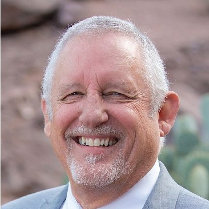

For healthcare professionals
A clinical partner for your clients and your practice
Referrals, case consultation and organizational consulting for healthcare providers and first responder agencies, from a doctoral-level licensed counselor with more than 25 years in clinical care, training and leadership.
Send a referral
Referring a client
We offer two pathways. Clients can start with a consultation with Dr. Sharp, or with our brain wellness program (NeuralChek and BrainTap), which is run by certified associates in a program Dr. Sharp designed, with a safety screening for every client.
You refer
Call or fax us. We contact your client within one business day.
We find the right pathway
Counseling clients start with a consultation with Dr. Sharp. Wellness clients complete a safety screening before any session.
Our team guides sessions
BrainTap sessions take place in our Henderson office, in a program Dr. Sharp designed and oversees.
We stay in touch
With your client’s written consent, we share updates and coordinate with you.
Good fits for referral
- Clients managing everyday stress who want a structured relaxation practice
- Clients in therapy who may benefit from a calming adjunct, after screening
- First responders and other high-pressure professionals who want support staying composed and recovering well
- Clients with demanding, high-stakes work and long hours
Screening
We screen every client for epilepsy, seizure history, light sensitivity, migraine, cardiac devices, brain injury and a history of dissociation or psychosis before any BrainTap session.
What the evidence does and doesn’t show
BrainTap pairs narrated guided relaxation with binaural beats, isochronic tones and LED light. Guided relaxation and hypnosis have a solid evidence base as adjuncts for stress. Evidence for the brainwave entrainment mechanism itself is mixed, and most BrainTap-specific studies are small or industry-affiliated. For example, a 2020 single-session pilot of 100 adults (Global Advances in Health and Medicine, conference abstract, no control group, BrainTap-affiliated authors) reported lower stress-index scores and higher HRV after one session.
NeuralChek is a five-minute resting heart rate variability (HRV) recording with related biometrics. We use it for client education only and don’t treat its composite scores as assessment.
We offer both as optional, private-pay wellness services, with screening and written informed consent, and we refer to counseling when that’s the better fit. Neither is FDA-cleared to diagnose or treat any condition.
Clinical consultation for colleagues
Every clinician has cases that challenge them. Solo practice can make it hard to find a trusted second opinion.
Dr. Sharp offers confidential consultation for:
- Complex cases, including trauma, personality disorders and co-occurring conditions
- Ethical dilemmas and boundary questions
- Ongoing peer consultation for clinicians in solo or small practices
He brings nearly two decades as a counselor educator and serves as Vice Chair Emeritus of the National Board for Certified Counselors.
Consulting for practices and organizations
Dr. Sharp also helps practices, agencies and organizations with structure, team development and growth.
Send a referral
- Phone
- 725-259-3889
- Fax
- (928) 496-2093
- [Email address]